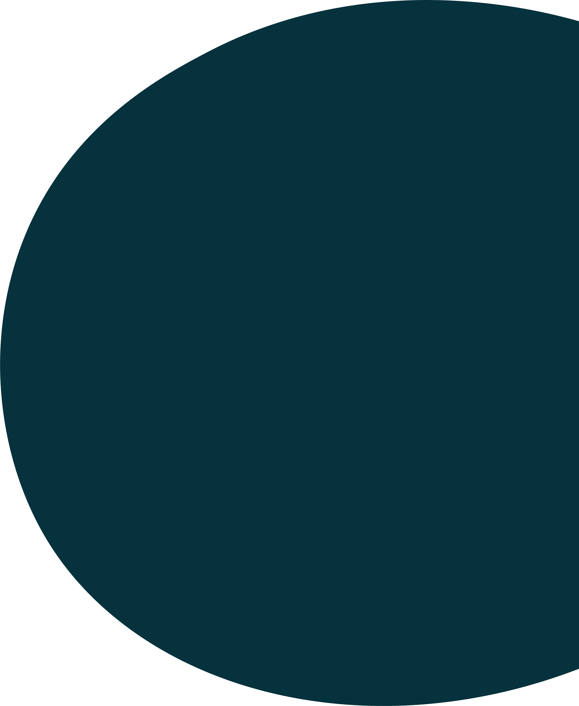

Mød vores elever

SIG JA


Overrask dig selv på
Eriksminde Efterskole
"Medbestemmelse på mit efterskoleår"
"Demokrati, samtale, fællesskab, medbestemmelse og ligeværd"
"Valgfagene gør at jeg kan prøve mange forskellige ting i løbet af mit år"
"Man behøver ikke at kunne - man skal bare VILLE"
"Vi er til tider i vores egen lille bobbel, men vi er også utrolig verdensorienteret"
"Jeg følte mig hjemme fra allerførste besøg"
"Skolen er fyldt med muligheder"
"Drengene her har et fantastisk sammenhold"